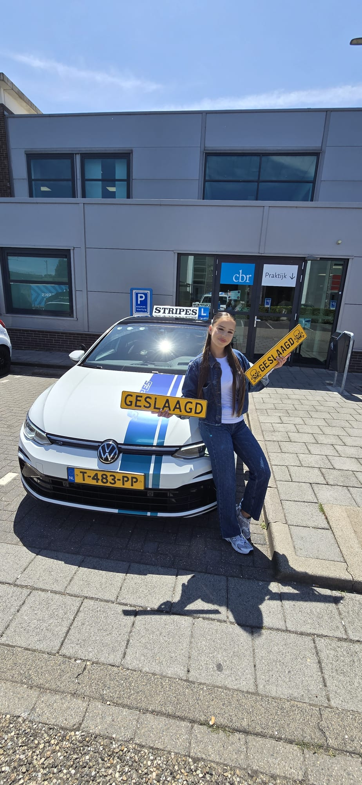

Rotterdam driving school · Free trial lesson · CBR-recognised instructors
Boek een gratis proefles
Op zoek naar een rijschool in Rotterdam die rijles geeft in het Duits? Bij Rijschool Stripes kun je terecht voor autorijlessen met een instructeur die Duits spreekt. Zo begrijp je iedere instructie meteen, zonder taalbarrière, en werk je met meer zelfvertrouwen toe naar je rijbewijs, van je allereerste les tot en met het CBR-examen.
Je begrijpt elke instructie meteen, zonder ruis of misverstanden. Dat is cruciaal als je net begint met autorijden.
Rijden is al spannend genoeg. Zonder taalbarrière voel je je sneller op je gemak, ook tijdens het examen.
Je krijgt bij elke les dezelfde instructeur, zodat je een vertrouwde band opbouwt en sneller leert.
Duidelijke communicatie in het Duits zorgt voor sneller begrip en dus sneller resultaat op de weg.
Boek via de website of telefonisch een gratis proefles in het Duits.
Je maakt kennis met je instructeur en bespreekt samen je niveau en wensen.
Je volgt lessen in je eigen tempo, met heldere uitleg in het Duits.
Je bouwt stap voor stap aan je zelfvertrouwen, tot je klaar bent voor het examen.
Ja, bij Rijschool Stripes kun je kiezen voor een instructeur die Duits spreekt. Theorie-uitleg en de praktijklessen verlopen volledig in het Duits, zodat je alles direct begrijpt.
Het CBR-examen zelf verloopt in het Nederlands, maar als voorbereiding hierop leer je bij ons ook de belangrijkste examentermen in het Nederlands, zodat je goed voorbereid het examen ingaat.
De prijs van een rijles is gelijk aan onze reguliere lestarieven, vanaf €55 per les. Bekijk onze pakketten voor een overzicht van alle mogelijkheden.
Ja! Je eerste proefles is gratis, ook als je deze in het Duits wilt volgen. Boek eenvoudig via de website of neem telefonisch contact op.
Naast deze taal bieden wij ook rijles aan in het Nederlands, Engels, Duits, Hindi, Urdu, Sranantongo en Arabisch. Bekijk hieronder de taal die bij jou past.